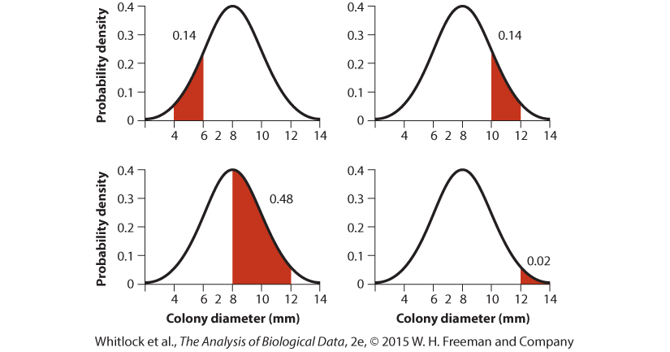

Exercise 1
You are a level 4 dwarf cleric named Edmund Strongjaw. You are engaged in a battle with an orc fighter. The orc has an armor class of 14, meaning that it takes an attack roll of 14 or better to land an attack with your battle axe.
What is the probability that you successfully hit the orc on your next attack roll with a 20-sided die with sides labeled 1 through 20? Express your answer in probability notation.
What if you had a magical axe that added two points to your attack roll (meaning that your maximum roll value is now a 22 and your minimum roll is a 3, or, in other words, you need to roll a 12 or higher)?
What is the probability that you successfully land three attacks in a row, when you need a 12 or higher?
Suppose you have “advantage” on your roll, meaning that you get to roll the die twice and take the better of the two rolls. Now what is the likelihood of a successfull attack, assuming that you still just need a 12 or better?

Exercise 2
A new drug for treating arthritis has just been approved by the FDA. It was found to significantly improve the symptoms of 78% of patients. 3% of patients suffered the side effect of swelling. 7% of patients suffered from headaches after taking the drug. There was no correlation between whether patients who experienced one side effect experienced a second side effect or improvement of their arthritis. (In other words, improvement and side effects were independent events).
What is the probability that two unrelated patients both see improvement of their arthritis after taking the drug?
If those two patients were actually brothers, would we expect that probability to be the same? (i.e., would we have two independent random trials?)
What is the probability that a patient suffers from both headaches and swelling, but also experiences improvement of their arthritis?
Exercise 3
A test for HIV has a sensitivity of 90% and a specificity of 80%. In the US, the prevalence of HIV in the adult population is about 1/300. If randomly chosen American adults get tested for HIV, what’s the probability of:
Testing positive given HIV infection
Testing negative given HIV infection
Testing positive given no HIV infection
Testing positive (in general)
Having HIV infection, given a positive test result.
Exercise 4
SIDS (sudden infant death syndrome, also known as “crib death”) refers to the occasional, sudden death of infants while sleeping. The cause of SIDS is unknown. A true story: In the 1990s several women in England who had multiple children die mysteriously were sent to prison for killing their children. Although these women claimed their children had died of SIDS, they were convicted based largely on statistical evidence. The expert witness for the prosecution in most of these cases was Sir Roy Meadow, a prominent pediatrician.
Dr. Meadow’s argument was that the overall rate of SIDS is about 1/1000. Therefore, two crib deaths within a family should happen only one in a million times (i.e. 1/1000 x 1/1000), and three should happen only one in a billion times. “Meadow’s law” was usually expressed as “one death is a tragedy, two is suspicious, three is murder.” Only about 10 years (and several convictions of innocent mothers later) was this argument deemed fallacious and many the resulting verdicts overturned. In fact, when applied to mothers arrested solely on the basis of multiple crib deaths (as many of these mothers were), Meadow’s argument has not one flaw, but two.
Based on what you’ve already learned about probability, what are the two flaws with Meadow’s law?
Exercise 5
The gene Prdm9 is thought to regulate hotspots of recombination (crossing over) in mammals, including humans. In the people of Han Chinese descent living in the Los Angeles area there are five alleles at the Prdm9 gene, labeled A1, A2, A3, A4, and A5. The relative frequencies with which these alleles occur in that population are 0.06, 0.03, 0.84, 0.03, and 0.04, respectively (Parvanov et al. 2010). Assume that in this population, the two alleles present in any individual are independently sampled from the population as a whole (this can happen if people in the community marry and produce children randomly with respect to Prdm9 genotype).
What is the probability that a single allele chosen at random from this population is either A1 or A4?
What is the probability that an individual has two A1 alleles (i.e., what is the probability that its first allele is A1 and its second allele is A1)?
What is the probability that an individual has one A1 allele and one A3 allele? (Note that this can happen if the first allele drawn is A1 and the second is A3, or if the first allele is A3 and the second is A1. A probability tree will help to keep track of all the possibilities.)
What is the probability that an individual is not A1A1 (i.e., does not have two A1 alleles)?
What is the probability, if you drew two individuals at random from this population, that neither of them would have an A1A1 genotype?
What is the probability, if you drew two individuals at random from this population, that at least one of them would have an A1A1 genotype?
Exercise 6
Studies have shown that the probability that a man washes his hands after using the restroom at an airport is 0.74, and the probability that a woman washes hers is 0.83 (American Society for Microbiology 2005). A waiting room in an airport contains 40 men and 60 women. Assume that individual men and women are equally likely to use the restroom. What is the probability that the next individual who goes to the restroom will wash his or her hands?
Exercise 7
The figure at the bottom of the page shows the probability density of colony diameters (in mm) in a hypothetical population of Paenibacillus bacteria. The distribution is continuous, so the probability of sampling a colony within some range of diameter values is given by area under the curve. Numbers next to the curve indicate the area of the region indicated in red. Consider the case in which a single colony is randomly sampled from the population.
Are the events “diameter is between 4 and 6” and “diameter is between 8 and 12” mutually exclusive? Explain.
What is the probability that a randomly chosen colony diameter is between 4 and 6 or between 8 and 12?
What is the probability that a randomly chosen colony diameter is greater than or equal to 10?
What is the probability that a randomly chosen colony diameter is between 8 and 10?
